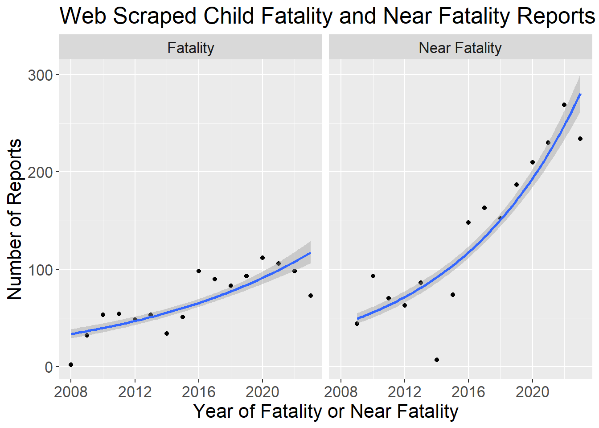
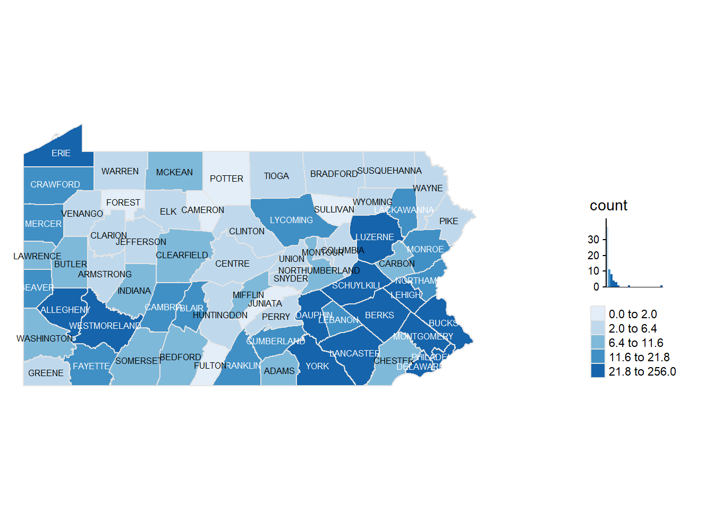

Code
library(rvest)
library(jsonlite)
library(tidyverse)
library(RSelenium)
library(ggplot2)
library(ggthemes)
library(tmap)
library(sf)
library(robotstxt)Barboza-Salerno
In order to run this you must install Docker Desktop. I describe what Docker Desktop is in this article.
Text data comprises up to 90% of information collected by organizations. Natural Language Processing techiques allow you to summarize large amounts of data in minutes.
The state of Pennsylvania collects information about child fatalities and near fatalities. There is a ton of useful information that goes un-analyzed that can be used to guide interventions.
There are a number of libraries useful for web scraping including RSelenium. Install these prior to running the code.
We do not want to scrape documents if the organization does not allow it. If the paths_allowed returns TRUE then it is ok to do.
You need to install and run docker; you must also instal wsl from the windows powershell. Then, in the command line type
docker pull selenium/standalone-firefox:2.53.0 docker run -d -p 4445:4444 selenium/standalone-firefox:2.53.0
The following code instantiates the web browser and then we can start scraping!
[1] "Connecting to remote server"
$applicationCacheEnabled
[1] TRUE
$rotatable
[1] FALSE
$handlesAlerts
[1] TRUE
$databaseEnabled
[1] TRUE
$version
[1] "45.0.2"
$platform
[1] "LINUX"
$nativeEvents
[1] FALSE
$acceptSslCerts
[1] TRUE
$webdriver.remote.sessionid
[1] "acc03a39-dc06-41e9-a364-d0d25130b4c8"
$webStorageEnabled
[1] TRUE
$locationContextEnabled
[1] TRUE
$browserName
[1] "firefox"
$takesScreenshot
[1] TRUE
$javascriptEnabled
[1] TRUE
$cssSelectorsEnabled
[1] TRUE
$id
[1] "acc03a39-dc06-41e9-a364-d0d25130b4c8"[[1]]
[1] "Fatality Reports"A lot of this is trial and error. I find the search button through the html code and then the button associated with showing ‘all’ records. I then simulate a mouse click to show all the records.
# identify search button and select 'all' records :)
searchID<-'//*[@id="ctl00_ctl49_g_2f5406ff_66ab_4f5d_b7c7_f984206b2ab7_ddlPageSizer"]'
webElem<-remDr$findElement(value = searchID)
webElem$clickElement()
option <- remDr$findElement(using = 'xpath', "//*/option[@value = 'All']")
option$clickElement()
Sys.sleep(15)Let’s now save the resulting table showed on the website to an R dataframe
Rows: 3,113
Columns: 6
$ `Info ⇧` <chr> "Central: Central Info in Report", "County: Northeast…
$ `Name ⇳` <chr> "Near Death 092515 C", "Black Death 022413 NE", "DA C…
$ `Fatal/Near ⇳` <chr> "Near Fatality", "Fatality", "Near Fatality", "Near F…
$ `Year ⇳` <int> 2015, 2013, 2018, 2019, 2019, 2018, 2019, 2019, 2017,…
$ `Date ⇳` <chr> "", "", "3/23", "07/03", "07/10", "5/8", "11/01", "08…
$ `DA Cert ⇳` <chr> "", "", "Yes", "Lifted", "Lifted", "No", "No", "", "L…[1] "Info ⇧" "Name ⇳" "Fatal/Near ⇳" "Year ⇳" "Date ⇳"
[6] "DA Cert ⇳" Now we clean the data so that we can analyze it
Child_Fatalities <- rvest::html_table(webpage, fill=TRUE)[[1]] %>%
# fix column names for repeated columns
tibble::as_tibble(.name_repair = "unique") %>%
# get unique names
janitor::clean_names(case = "snake") %>%
# lower, snake case
dplyr::select(info, name, fatal_near, year, date, da_cert)
# create four columns from first column that has region, county, gender and age
Child_Fatalities$info <- strsplit(Child_Fatalities$info, split = " : ")
stopwords = c("Region","County","Gender","Age")
Child_Fatalities$info <-gsub(paste0(stopwords,collapse = "|"),"", Child_Fatalities$info)
# separate by colon
Child_Fatalities <- separate(data = Child_Fatalities, col = info,
into = c("region", "county","gender","age"), sep = " :")
# get rid of white space
Child_Fatalities$region <- gsub(':\\s+', '', Child_Fatalities$region)
Child_Fatalities$county <- gsub('\\s+', '', Child_Fatalities$county)
Child_Fatalities$gender <- gsub('\\s+', '', Child_Fatalities$gender)
Child_Fatalities$age <- gsub('\\s+', '', Child_Fatalities$age)
Child_Fatalities$final_date <-
apply( Child_Fatalities[ , c("date", "year") ] , 1 , paste , collapse = "/" )
Child_Fatalities %>% glimpse(78)Rows: 3,113
Columns: 10
$ region <chr> "CentralCentral Info in Report", "Northeast Info in Repor…
$ county <chr> NA, NA, " Blair ", " Lebanon ", " Adams", " Adams…
$ gender <chr> NA, NA, " Male ", " Female &n", " Female",…
$ age <chr> NA, NA, " 2years", NA, " 18Months", " 3weeks", " 12Years"…
$ name <chr> "Near Death 092515 C", "Black Death 022413 NE", "DA Certi…
$ fatal_near <chr> "Near Fatality", "Fatality", "Near Fatality", "Near Fatal…
$ year <int> 2015, 2013, 2018, 2019, 2019, 2018, 2019, 2019, 2017, 201…
$ date <chr> "", "", "3/23", "07/03", "07/10", "5/8", "11/01", "08/20"…
$ da_cert <chr> "", "", "Yes", "Lifted", "Lifted", "No", "No", "", "Lifte…
$ final_date <chr> "/2015", "/2013", "3/23/2018", "07/03/2019", "07/10/2019"…Finally, let’s look at spatial and temporal trends
ggplot(Child_Fatalities %>%
group_by(year, fatal_near) %>% count(year) %>% drop_na(year), aes(x = year, n)) +
geom_point() +
geom_smooth(method = "glm", method.args = list(family = poisson)) +
facet_wrap(~fatal_near) +
labs(x = "Year of Fatality or Near Fatality", y = "Number of Reports", title = "Web Scraped Child Fatality and Near Fatality Reports") +
theme(text=element_text(size=16, family="Arial"))
Reading layer `PaCounty2024_03' from data source
`C:\Users\barboza-salerno.1\evalsp23.classes.andrewheiss.com\example\PaCounty2024_03.geojson'
using driver `GeoJSON'
Simple feature collection with 67 features and 21 fields
Geometry type: MULTIPOLYGON
Dimension: XY
Bounding box: xmin: -80.51939 ymin: 39.71986 xmax: -74.68956 ymax: 42.26935
Geodetic CRS: WGS 84near_fatalities <- Child_Fatalities %>%
filter(fatal_near == "Near Fatality" & county !="") %>%
drop_na() %>%
mutate (COUNTY_NAM = str_to_upper(county)) %>%
select(COUNTY_NAM) %>%
group_by(COUNTY_NAM) %>%
summarize(count = n()) %>%
right_join(pa_bounds) %>% st_as_sf()%>%
mutate(count = replace_na(count, 0))
tm_shape(near_fatalities) + tm_borders(col = "grey90") +
tm_fill("count", colorNA = "white",
style = "quantile",
palette = "Blues",
legend.hist = TRUE,
legend.is.portrait = TRUE,
legend.hist.z = 0.1) +
tm_layout(legend.outside = TRUE,
legend.height = 0.45,
legend.width = 5.0,
legend.position = c("right", "bottom"),
frame = FALSE) + tm_text("COUNTY_NAM", size = 1/2) +
tm_borders(alpha = 0.5)
---
title: "Text Mining Child Fatalities"
author: "Barboza-Salerno"
---
```{r setup, include=FALSE}
knitr::opts_chunk$set(warning = FALSE, message = FALSE)
```
## Requirements
In order to run this you must install Docker Desktop. I describe what Docker Desktop is in this article.
## Benefits
Text data comprises up to 90% of information collected by organizations. Natural Language Processing techiques allow you to summarize large amounts of data in minutes.
## Example
The state of Pennsylvania collects information about child fatalities and near fatalities. There is a ton of useful information that goes un-analyzed that can be used to guide interventions.
## Web Scraping
There are a number of libraries useful for web scraping including RSelenium. Install these prior to running the code.
```{r}
library(rvest)
library(jsonlite)
library(tidyverse)
library(RSelenium)
library(ggplot2)
library(ggthemes)
library(tmap)
library(sf)
library(robotstxt)
```
## Checks
We do not want to scrape documents if the organization does not allow it. If the `paths_allowed` returns `TRUE` then it is ok to do.
```{r}
paths_allowed(paths="https://www.dhs.pa.gov/docs/OCYF/Pages/Fatality-Reports.aspx")
```
You need to install and run docker; you must also instal `wsl` from the windows powershell. Then, in the command line type
`docker pull selenium/standalone-firefox:2.53.0`
`docker run -d -p 4445:4444 selenium/standalone-firefox:2.53.0`
The following code instantiates the web browser and then we can start scraping!
```{r}
remDr <- remoteDriver(port = 4445L)
url <- 'https://www.dhs.pa.gov/docs/OCYF/Pages/Fatality-Reports.aspx'
remDr$open(silent = FALSE) #opens a browser
remDr$navigate(url)
remDr$getTitle()
remDr$screenshot(display = TRUE)
```
A lot of this is trial and error. I find the search button through the html code and then the button associated with showing 'all' records. I then simulate a mouse click to show all the records.
```{r}
# identify search button and select 'all' records :)
searchID<-'//*[@id="ctl00_ctl49_g_2f5406ff_66ab_4f5d_b7c7_f984206b2ab7_ddlPageSizer"]'
webElem<-remDr$findElement(value = searchID)
webElem$clickElement()
option <- remDr$findElement(using = 'xpath', "//*/option[@value = 'All']")
option$clickElement()
Sys.sleep(15)
```
Let's now save the resulting table showed on the website to an R dataframe
```{r}
webpage <- xml2::read_html(unlist(remDr$getPageSource()), encoding = "UTF-8")
fatalities_table <- rvest::html_table(webpage, fill=TRUE)[[1]]
# check the data.frame
fatalities_table %>% dplyr::glimpse(78)
base::colnames(x = rvest::html_table(webpage, fill=TRUE)[[1]])
```
Now we clean the data so that we can analyze it
```{r}
Child_Fatalities <- rvest::html_table(webpage, fill=TRUE)[[1]] %>%
# fix column names for repeated columns
tibble::as_tibble(.name_repair = "unique") %>%
# get unique names
janitor::clean_names(case = "snake") %>%
# lower, snake case
dplyr::select(info, name, fatal_near, year, date, da_cert)
# create four columns from first column that has region, county, gender and age
Child_Fatalities$info <- strsplit(Child_Fatalities$info, split = " : ")
stopwords = c("Region","County","Gender","Age")
Child_Fatalities$info <-gsub(paste0(stopwords,collapse = "|"),"", Child_Fatalities$info)
# separate by colon
Child_Fatalities <- separate(data = Child_Fatalities, col = info,
into = c("region", "county","gender","age"), sep = " :")
# get rid of white space
Child_Fatalities$region <- gsub(':\\s+', '', Child_Fatalities$region)
Child_Fatalities$county <- gsub('\\s+', '', Child_Fatalities$county)
Child_Fatalities$gender <- gsub('\\s+', '', Child_Fatalities$gender)
Child_Fatalities$age <- gsub('\\s+', '', Child_Fatalities$age)
Child_Fatalities$final_date <-
apply( Child_Fatalities[ , c("date", "year") ] , 1 , paste , collapse = "/" )
Child_Fatalities %>% glimpse(78)
```
Finally, let's look at spatial and temporal trends
```{r}
ggplot(Child_Fatalities %>%
group_by(year, fatal_near) %>% count(year) %>% drop_na(year), aes(x = year, n)) +
geom_point() +
geom_smooth(method = "glm", method.args = list(family = poisson)) +
facet_wrap(~fatal_near) +
labs(x = "Year of Fatality or Near Fatality", y = "Number of Reports", title = "Web Scraped Child Fatality and Near Fatality Reports") +
theme(text=element_text(size=16, family="Arial"))
```
```{r}
pa_bounds <- st_read("PaCounty2024_03.geojson")
near_fatalities <- Child_Fatalities %>%
filter(fatal_near == "Near Fatality" & county !="") %>%
drop_na() %>%
mutate (COUNTY_NAM = str_to_upper(county)) %>%
select(COUNTY_NAM) %>%
group_by(COUNTY_NAM) %>%
summarize(count = n()) %>%
right_join(pa_bounds) %>% st_as_sf()%>%
mutate(count = replace_na(count, 0))
tm_shape(near_fatalities) + tm_borders(col = "grey90") +
tm_fill("count", colorNA = "white",
style = "quantile",
palette = "Blues",
legend.hist = TRUE,
legend.is.portrait = TRUE,
legend.hist.z = 0.1) +
tm_layout(legend.outside = TRUE,
legend.height = 0.45,
legend.width = 5.0,
legend.position = c("right", "bottom"),
frame = FALSE) + tm_text("COUNTY_NAM", size = 1/2) +
tm_borders(alpha = 0.5)
```